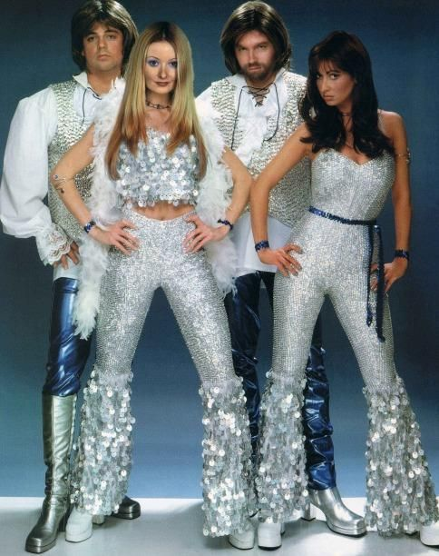
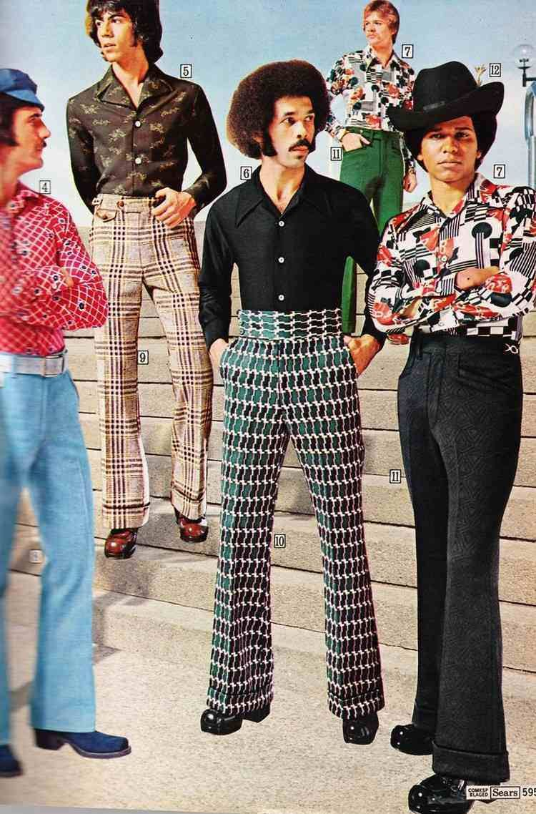
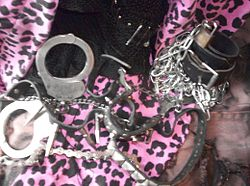
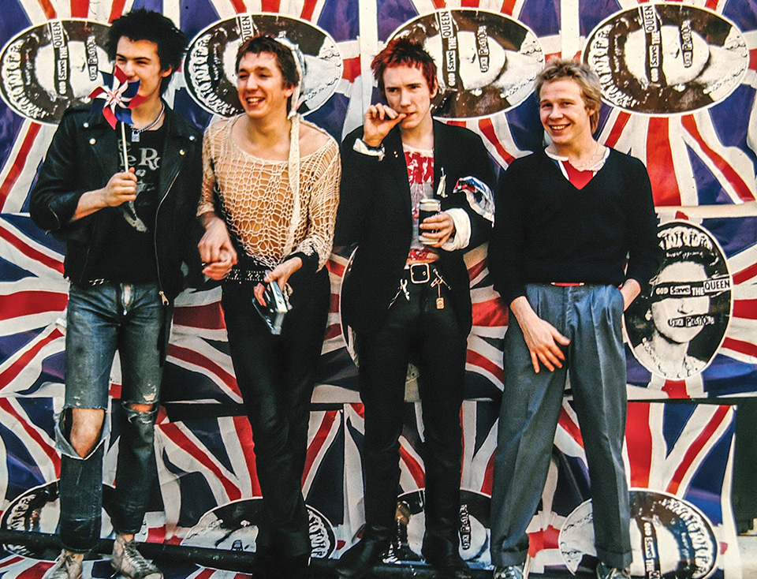
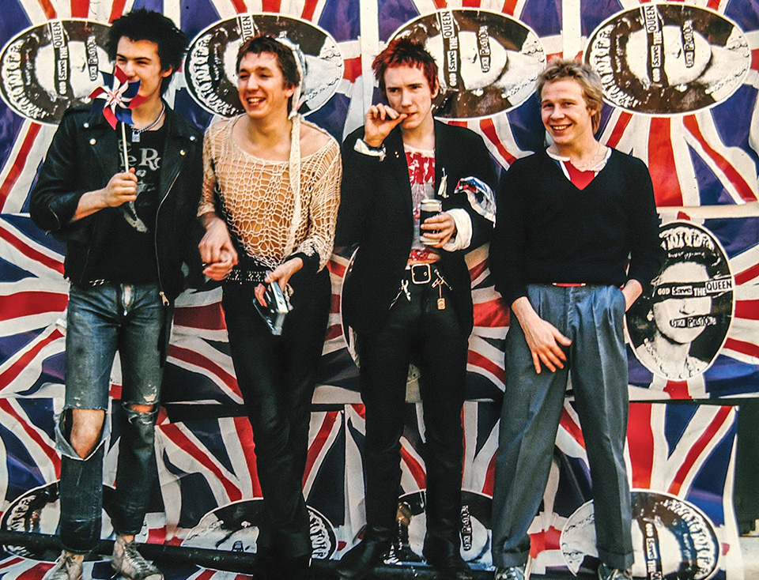
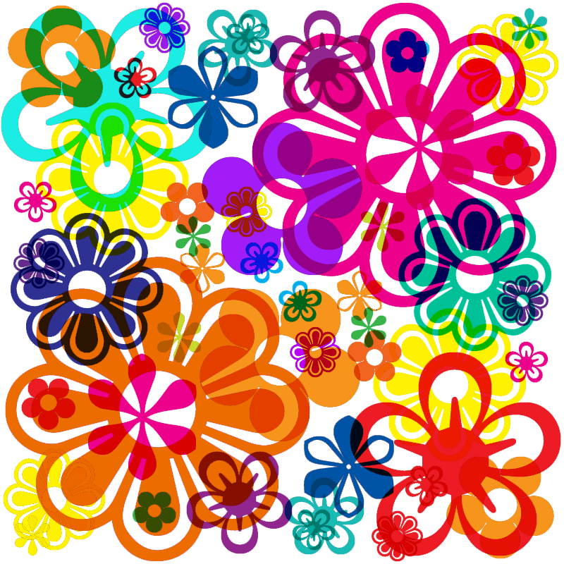
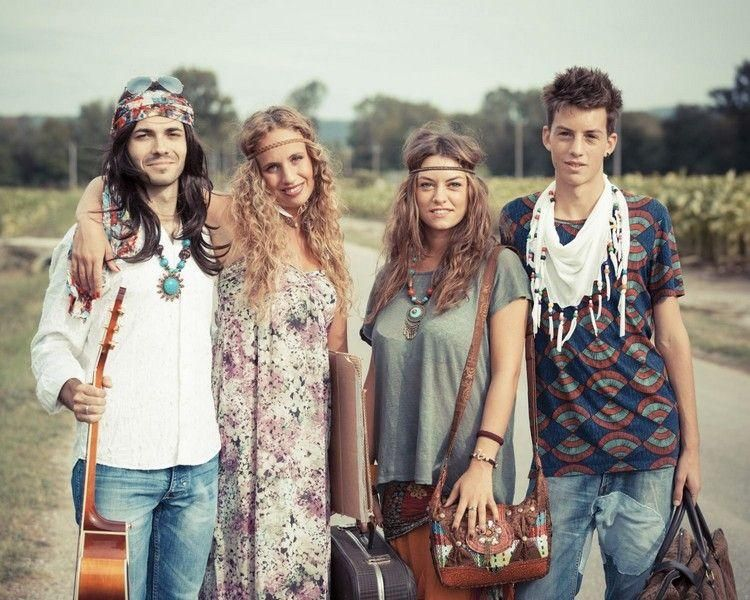
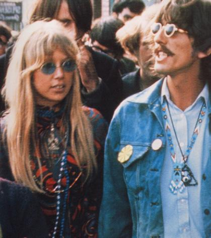

La mode disco
Pour commencer, les années 70 ont été une époque où le disco fut populaire. Cette mode doit s'entendre et se voir. Les tenues en lycra et spandex étaient souvent portées durant les fêtes avec une telle musique. Les couleurs à effet néon étaient fréquemment rencontrées dans les boîtes de nuit pour refléter la lumière des boules à facettes.
Les femmes portaient des robes, voire des mini-robes, fines et fluides ou bien des pantalons amples et évasés. D'autres femmes portaient également des combinaisons en lamé, des vêtements moulants en spandex ou autre textiles synthétiques, révélateurs et sexy, ceux-ci devant mettre en valeur leur corps comme par exemple les vêtements sans dos, les bustiers ou encore les vêtements près du corps. L'usage du satin est significatif ainsi que le maquillage accentué et parfois les paillettes.
Pour finir, les hommes s'habillent avec des chemises en polyester brillantes, souvent serrées, parfois décorées avec des motifs colorés et des cols pointus très larges, de préférence ouverts à la poitrine. Les hommes portent également des costumes et des vêtements trois pièces avec un gilet. Les pantalons sont le plus souvent moulants dans certaines parties du corps, telles que le bas ventre et au niveau des cuisses, mais la partie inférieure du pantalon est évasée.


La mode punk

Tout d'abord, la mode punk s'agit d'un renversement de toutes les valeurs et de tous les codes vestimentaires issus du mouvement hippie. Elle est caractérisée principalement par des couleurs flashy, des imprimés voyants, des tissus et des matières synthétiques.
Il existe des symboles représentatifs de cette mode tels que le badge qui est emblématique de la culture rock. Son caractère peu onéreux et sa facilité de fabrication ou de personnalisation sont en accord avec la culture punk. Le t-shirt peut prendre une valeur symbolique d'icône s'il est orné de l'effigie, des couleurs ou du logo d'un groupe. Les bretelles se portent généralement pendantes sur le pantalon notamment pour leur rôle de maintien mais aussi pour la provocation vis-à-vis de la tenue correcte communément admise. La mode punk utilise également des accessoires comme les menottes, les cadenas, les chaînes, les boucles de métal, les lacets, les sangles, et aussi les laisses et les colliers pour chien.
Enfin, le maquillage est très prononcé, les paupières sont noircies au khôl, les lèvres d'un rouge intense, le teint souvent blafard.
 

La mode hippie

La mode hippie est apparue dans les années 1960 mais a également traversé et impacté les années 1970.
En partie pour s'opposer aux autres et aux usages, le hippie, homme ou femme, portait les cheveux longs pour dénoncer la guerre du Viêt Nam où les soldats avaient tous le crâne rasé. Les femmes les portaient le plus souvent défaits. La mode hippie préconisait la liberté du corps. Se promener pieds nus heurtait également les valeurs d'hygiène mises en avant dans le modèle américain. Les vêtements du hippie, aux couleurs vives, étaient contrastés et parfois choquants à une époque où les tenues étaient assez uniformes et sombres. Les pantalons étaient à "pattes d’éléphants", style lancé par les hippies californiens, et l’influence de l’Orient avait donné aux hippies le goût des sandales, des gilets afghans, des tuniques indiennes aux motifs très fleuris et colorés. Ils pouvaient tout aussi bien être nus quand la situation le permettait.
En cohérence avec l'idée d'anticonsommation, les hippies achetaient souvent leurs vêtements dans des friperies ou les fabriquaient eux-mêmes. Par exemple, le "Tie and dye", une technique de teinte des tissus en couleur vive en forme de ronds et plus ou moins aléatoire, était très répandue dans le phénomène hippie. Le blue-jeans, pantalon traditionnel des ouvriers américains au XXe siècle fut également un vêtement emblématique de la génération hippie, génération dans laquelle il évolua: il était souvent porté peint, brodé, cousu, couvert de coquillages, de strass, de bijoux, de fleurs, et toujours avec les pattes d'éléphant. Le vêtement devint un mode d'expression de la personnalité.

